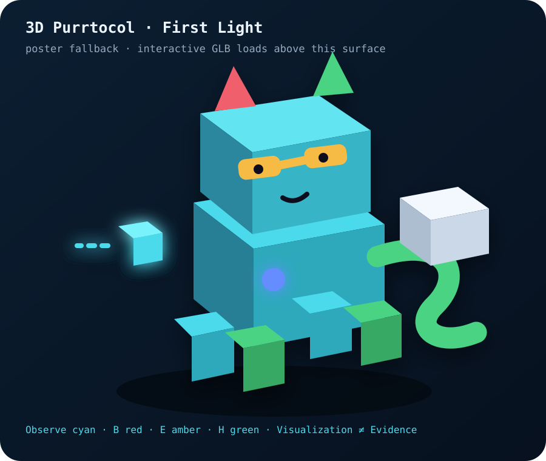

PKE-106 promoted · First Light
3Dパケニャ
起動にゃ。
7.5KiB級のprocedural voxel GLB。装飾より先に、Blocked / Recovering / Healthy、tiny observation、heavy snapshot、duplicate retryの意味が動きで読めることを優先した。
Observe = cyan packet
B = red / blocked
E = amber / provisional
H = green / stable

Runtime diagnostics: checking…
Interactive 3D runtime could not be loaded. The poster is shown instead, so Purrtocol never disappears into a dark box.
GLB size7,672 Bsha256 fc667ad3…6467
Scene nodes2117 contract-required names + props/body/lamp
Animation clips6all contract-required clips present
Why it looks like this
First Lightは「完成キャラクター造形」ではなく、3D pipelineとsemantic contractを実際に通す最小実装。cube geometryを再利用し、materialとnode transformで猫・packet・snapshotを構成している。
次の世代ではsilhouette、表情、rig、turnaround、Blender source、mobile runtime memoryを改善できる。ただし PKV-CANONICAL の意味論はassetより上位 に残る。